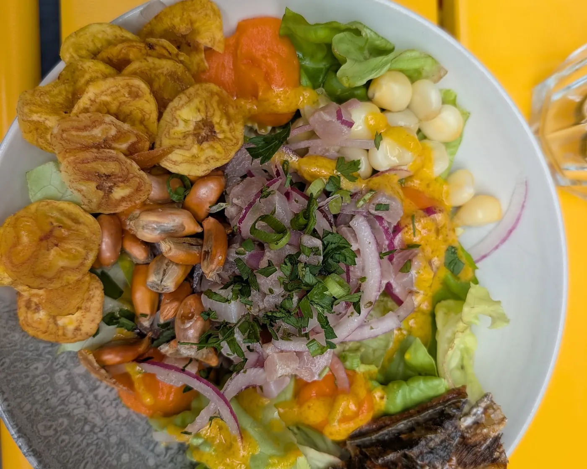
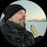

Le ceviche
Oignon rouge, coriandre, chips de banane plantain et maïs grillé, servi en terrasse sur les tables jaunes.
« […] le ceviche, d'une fraîcheur absolue avec ses chifles de banane plantain et son maïs grillé. »
ᚠᚱᛁᛞᚷᛖᛁᚱᚱ ᚷ., avis Google 5 étoiles